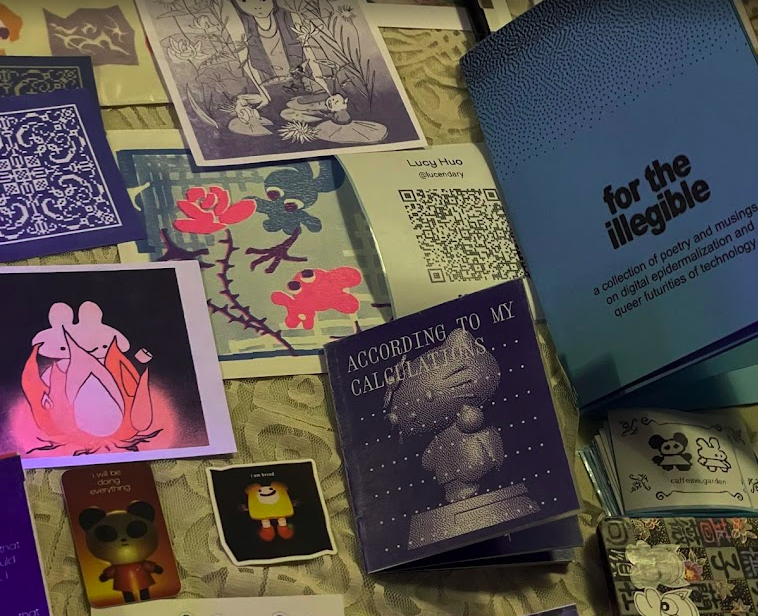
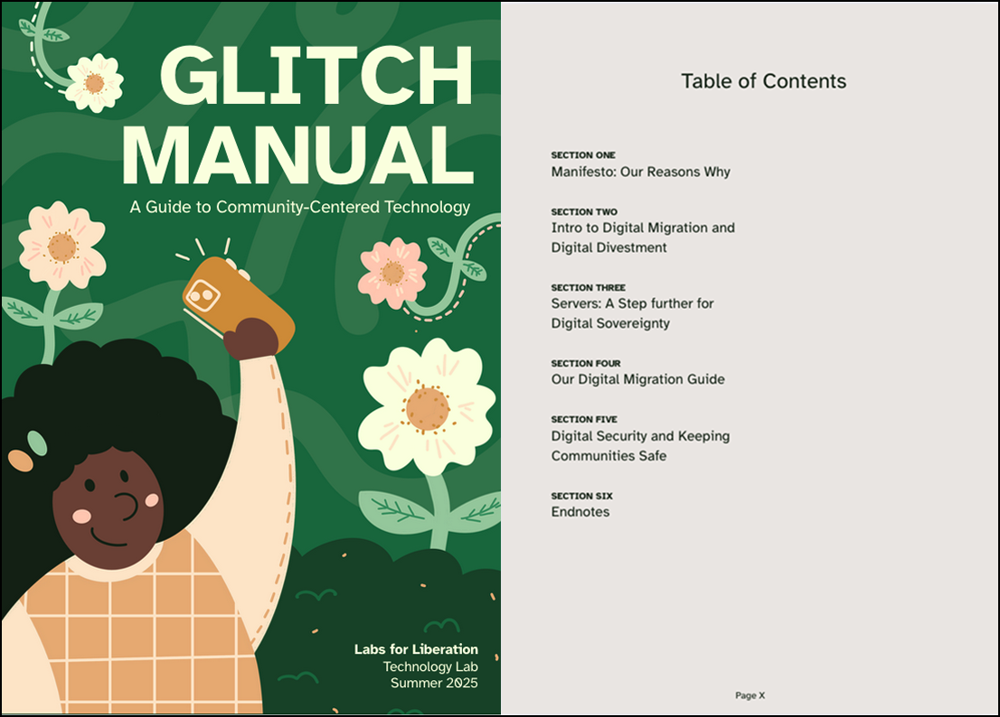
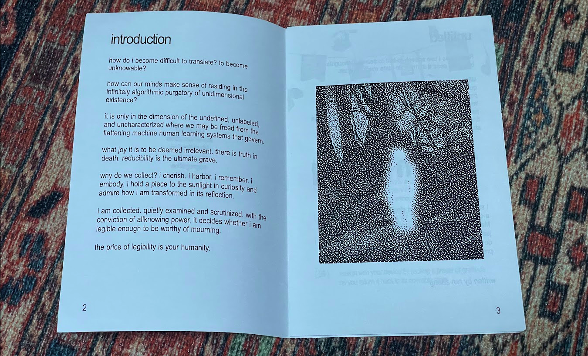
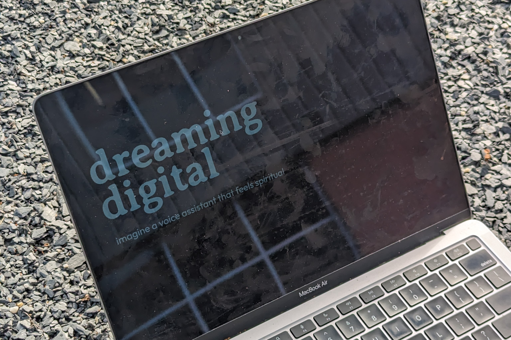
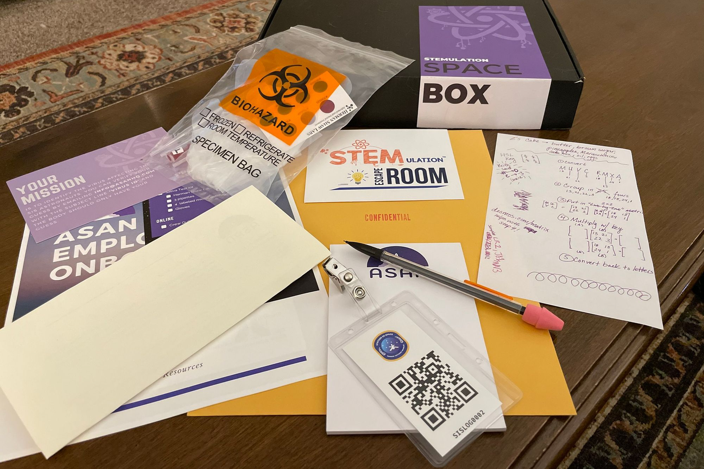
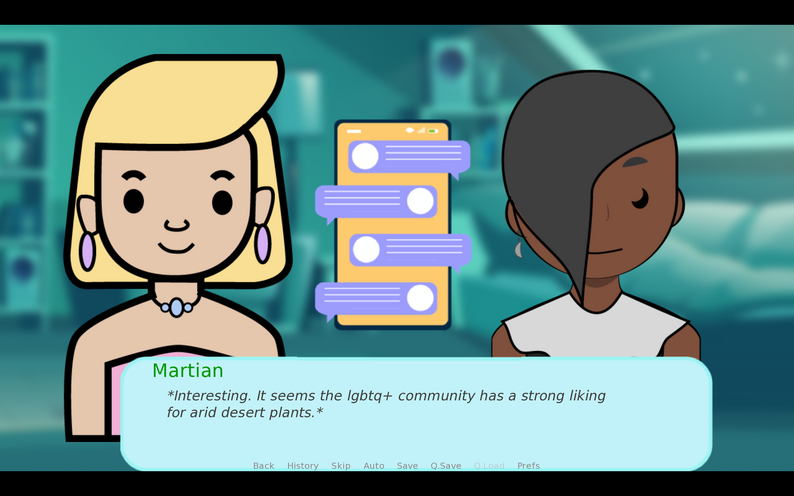

2026
currently, i am co-designing and hosting a series of cyanotype workshops that use slow image capture as a site for inquiry with my good friend alissa. the first session will be hosted in partnership with Telepathy on feb 7th 1pm (tickets here!)

i am also working on my thesis around data fugitivity and technologies for personal archiving. if this interests you please email me! would love to chat.
2025
was a research assistant to ahmed ansari exploring the state of decolonial design education. i also tabled with my zine collective caffeine garden at the Jersey Art Book Fair and New York Zine Fair.

that summer i also worked with labs for liberation to develop toolkits for a few community organizations in atlanta (my hometown). the guides supported them through the practice of degoogling and digital security
2024
started grad school where I read a lot on decolonial design and wrote a lot of creative code! my biggest project during my first year was for the illegible, a digital anthropology exploration on the affect of online surveillance through poetry. i compiled the collaboratively written poetry and research musings in the form of a zine.
2023
created a couple of poetic web projects, prompting at how to use digital interfaces and data as sites of inquiry.

2022
through the power of playful learning to immerse students in collaborative critical thinking, i worked as a product and visual designer in collaboration with michole washington to bring to life a multi-media, afrofuturistic, STEM themed escape room experience for Black youth.
2021
i supported a team of educators to develop and facilitate an anti-oppressive game design curriculum for a group of 8 high schoolers of color. the goal of the program was building a collective for underrepresented youth game designers to use the creative medium of games to explore themes of economic democracy, collective care, and anti-capitalism.
